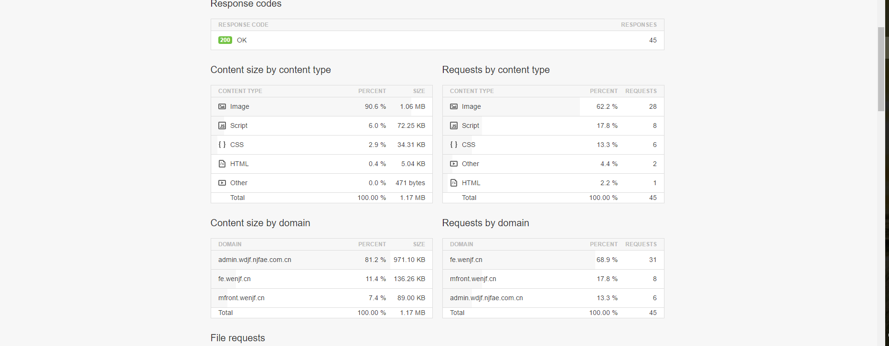
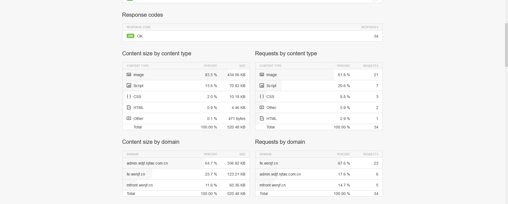

一、前端页面性能优化工具
基于三方平台
1、三方平台性能测试网站（https://tools.pingdom.com/）
2、谷歌页面性能测试网站 （https://developers.google.com/speed/pagespeed/insights/）
基于Chrome调试工具
1、Timeline 下Summary显示总共的加载用时 Eventlog记录了页面各模块(细分)加载的时间
2、Network中有个No throtting可以选择模拟手机GPRS、2、3、4、wifi等网络的页面加载情况
3、Audits中Web Page Performance 记录了css的使用比例（对于使用率较少的css文件我们可以选择合并删除）
二、前端页面性能优化方法
1、文件的合并（对于常用的公共css和js方法能合并就合并包括css文件(例如：wenjfbase.css)和js（例如：common.js）文件） 减少页面对服务器的请求次数
2、避免重复引用css和js文件（前端做静态页面给后端时，在后端套完页面后，检查页面是否因为后端公共头尾框架的引入而导致的前端公共文件的重复引用）
3、页面图片压缩的必要性（图片无所压缩地址：https://tinypng.com/或是http://www.secaibi.com/tools/）举例：温度金服首页1.1M,图片占比80%
4、js、css文件压缩
5、图片懒加载 （对于图片较多的页面我们可以采用图片懒加载技术来提升页面的响应速度）
6、避免内联样式和事件，使得结构与表现、行为的分离
以m.wenjf.com网站附图说明：
一、页面总体性能概览
1、优化前后加载时间从3.76s-->1.74s 提升了约2s
2、页面文件的合并和无关文件的删除使得页面体积1.17M-->0.52M 提升了约一倍
3、页面的请求数量从45-->41 下降了4个
优化前
优化后
二、页面细分性能概览
1、图片在整个页面的大小占比达到80%(优化图片是优化页面的重要部分)
2、页面图片的请求时间会随着图片的压缩减少请求时间
3、页面按域名和内容向服务器的请求从45-->34 减少了11
4、css的大小从原来的34.31kb-->10.18kb 缩小了约24kb
4、js的大小从原来的72.25kb-->70.82kb 缩小了约0.5kb
5、css的请求次数从6-->3 减少了3个
6、img的请求次数从1.06M-->0.43M 减少了65%
优化前

优化后
